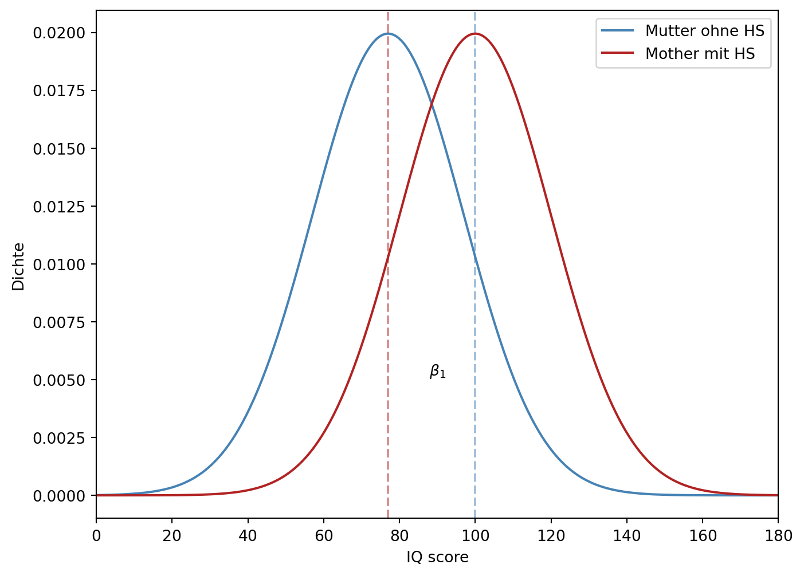
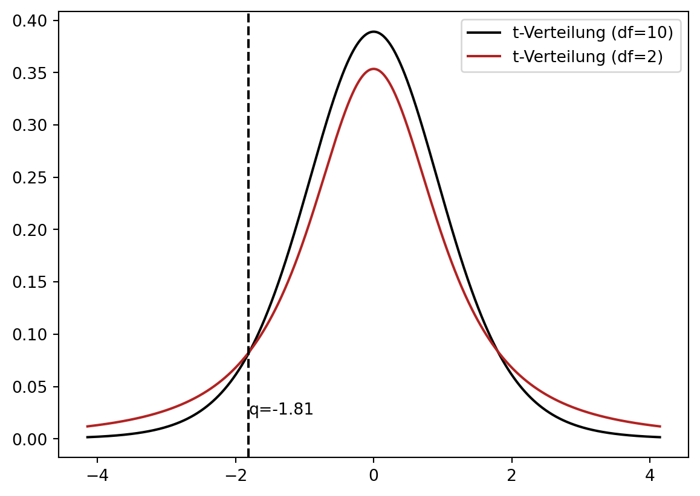

import pandas as pd
from statsmodels.formula.api import ols
kids = pd.read_csv("https://github.com/febse/data/raw/main/econ/childiq.csv")[["kid_score", "mom_hs"]]
kids.head()| kid_score | mom_hs | |
|---|---|---|
| 0 | 65 | 1 |
| 1 | 98 | 1 |
| 2 | 85 | 1 |
| 3 | 83 | 1 |
| 4 | 115 | 1 |
import pandas as pd
from statsmodels.formula.api import ols
kids = pd.read_csv("https://github.com/febse/data/raw/main/econ/childiq.csv")[["kid_score", "mom_hs"]]
kids.head()| kid_score | mom_hs | |
|---|---|---|
| 0 | 65 | 1 |
| 1 | 98 | 1 |
| 2 | 85 | 1 |
| 3 | 83 | 1 |
| 4 | 115 | 1 |
Beschreibung der Variablen in der Datei kids.csv:
kid_score: (numeric) Punkte im IQ-Testmom_hs (numeric): 1 falls die Mutter des Kindes einen High School Abschluss hat, 0 sonstIn dieser Aufgabe werden wir annehmen, dass die Kinder rein zufällig aus allen Kindern im Alter zwischen 3 und 5 Jahren in den USA ausgewählt wurden (zur Zeit der Untersuchung).
Wir möchten die folgende Forschungsfrage untersuchen: Erreichen Kinder, deren Mutter keinen High School Abschluss hat, im Durchschnitt niedrigere IQ-Werte als Kinder, deren Mutter einen High School Abschluss hat?
import seaborn as sns
import matplotlib.pyplot as plt
# Assuming kids is a pandas DataFrame
kids['mom_hs'] = kids['mom_hs'].astype('category')
plt.figure(figsize=(8, 6))
sns.boxplot(x='kid_score', y='mom_hs', data=kids, color='white', width=0.5)
sns.stripplot(x='kid_score', y='mom_hs', data=kids, size=4, jitter=True, color='black')
plt.xlabel('IQ score')
plt.ylabel("Bildung der Mutter")/usr/share/miniconda/envs/econ2024/lib/python3.11/site-packages/seaborn/categorical.py:641: FutureWarning:
The default of observed=False is deprecated and will be changed to True in a future version of pandas. Pass observed=False to retain current behavior or observed=True to adopt the future default and silence this warning.
/usr/share/miniconda/envs/econ2024/lib/python3.11/site-packages/seaborn/_oldcore.py:1119: FutureWarning:
use_inf_as_na option is deprecated and will be removed in a future version. Convert inf values to NaN before operating instead.
/usr/share/miniconda/envs/econ2024/lib/python3.11/site-packages/seaborn/_oldcore.py:1119: FutureWarning:
use_inf_as_na option is deprecated and will be removed in a future version. Convert inf values to NaN before operating instead.
/usr/share/miniconda/envs/econ2024/lib/python3.11/site-packages/seaborn/_oldcore.py:1075: FutureWarning:
When grouping with a length-1 list-like, you will need to pass a length-1 tuple to get_group in a future version of pandas. Pass `(name,)` instead of `name` to silence this warning.
Text(0, 0.5, 'Bildung der Mutter')# Berechnen Sie die durchschnittlichen IQ-Scores für Kinder, deren Mütter einen High-School-Abschluss haben, und für Kinder,
# deren Mütter keinen High-School-Abschluss haben.
\begin{align*} & i = 1,\ldots, n = 434 \text{ observations}\\ & y_i: \text{IQ score} \\ & \hat{y}_i: \text{Predicted IQ score} \\ & x_i \in \{0, 1\}: \text{status of the mother} \end{align*}
y_i = \beta_0 + \beta_1 x_i + e_i, e_i \sim N(0, \sigma^2)
\begin{align*} & y_i \sim N(\mu_i, \sigma^2), \quad i = 1,\ldots,n \\ & \mu_i = \beta_0 + \beta_1 x_i, \quad x_i \in \{0, 1\} \end{align*} \tag{11.1}
\mu_1 = \beta_0 + \beta_1 \cdot 1 \tag{11.2}
Für x = 0
\mu_0 = \beta_0 + \beta_1 \cdot 0 \tag{11.3}
Die Differenz der zwei Gleichungen 11.2 und 11.3 ergibt:
\begin{align*} \beta_0 & = \mu_0 \\ \beta_1 & = \mu_1 - \mu_0 \end{align*}
import numpy as np
import matplotlib.pyplot as plt
from scipy.stats import norm
# Define the range of x
x = np.linspace(0, 180, 1000)
# Calculate the densities of the normal distributions
y1 = norm.pdf(x, loc=77, scale=20)
y2 = norm.pdf(x, loc=100, scale=20)
# Create the plot
plt.figure(figsize=(8, 6))
plt.plot(x, y1, color='steelblue', label='Mutter ohne HS')
plt.plot(x, y2, color='firebrick', label='Mother mit HS')
plt.axvline(x=77, linestyle='--', alpha=0.5, color='firebrick')
plt.axvline(x=100, linestyle='--', alpha=0.5, color='steelblue')
plt.text(90, 0.005, r'$\beta_1$', verticalalignment='bottom', horizontalalignment='center')
plt.xlim([0, 180])
plt.xlabel('IQ score')
plt.ylabel('Dichte')
plt.legend(loc='upper right')
Berechnen Sie die Koeffizienten der folgenden Prognosegleichung für den IQ-Wert eines Kindes:
\hat{y} = \hat{\beta}_0 + \hat{\beta}_1 \cdot x
wobei y der IQ-Wert des Kindes ist, x die Variable mom_hs und \hat{y} die Prognose für den IQ-Wert ist. Benutzen Sie https://febse.github.io/econ2024-de/03-KQ-Methode.html#%C3%BCbung
Um die statistischen Eigenschaften der KQ-Schätzer für die Koeffizienten zu untersuchen, führen wir eine Simulation durch. Wir werden die folgenden Schritte durchführen:
mom_hs basierend auf dem Modell\begin{align*} & y_i = 80 + 15 x_i + e_i, e_i \sim N(0, 20^2) \\ & x_i \in \{0, 1\} \end{align*}
np.random.seed(123)
# Die Anzahl der Stichproben
B = 1000
# Die Anzahl der Beobachtungen pro Stichprobe
N = 434
#
e = np.random.normal(loc=0, scale=20, size=N * B)
# Für jedes Kind wir der Bildungsstatus der Mutter zufällig generiert
# so dass circa 80% der Mütter einen High-School-Abschluss haben
x = np.random.binomial(n=1, p=0.8, size=N * B)
y = 80 + 15*x + e
sample_id = np.repeat(np.arange(1, B+1), N)
all_samples = pd.DataFrame({'sim_id': sample_id, 'kid_score': y, 'mom_hs': x})
# Fit the models
def fit_ols(dat):
fit = ols('kid_score ~ mom_hs', dat).fit()
return pd.Series({
'intercept': fit.params['Intercept'],
'intercept_se': fit.bse['Intercept'],
'slope': fit.params['mom_hs'],
'slope_se': fit.bse['mom_hs']
})
sim = all_samples.groupby('sim_id').apply(fit_ols)/tmp/ipykernel_2440/1235863640.py:35: DeprecationWarning:
DataFrameGroupBy.apply operated on the grouping columns. This behavior is deprecated, and in a future version of pandas the grouping columns will be excluded from the operation. Either pass `include_groups=False` to exclude the groupings or explicitly select the grouping columns after groupby to silence this warning.
Übungsaufgabe 11.1 Benutzen Sie die Daten der ersten Stichprobe aus der Simulation, um die Koeffizienten \beta_0 und \beta_1 zu schätzen. Hinweis: Benutzen Sie die Funktion ols aus dem Paket statsmodels in Python.
sample_1 = all_samples[all_samples['sim_id'] == 1]
fit_sample1 = ols('kid_score ~ mom_hs', sample_1).fit()
fit_sample1.paramsIntercept 80.685154
mom_hs 12.612303
dtype: float64fig, ax = plt.subplots(figsize=(8, 6))
sns.stripplot(x='slope', data=sim, jitter=0.2, alpha=0.3, ax=ax)
sns.boxplot(x='slope', data=sim, ax=ax, color='white', width=0.3)
plt.axvline(x=15, color='red', linestyle='--')
sns.kdeplot(x='slope', data=sim, color='black', bw_adjust=-1)
ax.set_ylabel("Dichte")
ax.set_xlabel(r"Steigung ($\hat{\beta}_1$)")/usr/share/miniconda/envs/econ2024/lib/python3.11/site-packages/seaborn/_oldcore.py:1119: FutureWarning:
use_inf_as_na option is deprecated and will be removed in a future version. Convert inf values to NaN before operating instead.
/usr/share/miniconda/envs/econ2024/lib/python3.11/site-packages/seaborn/_oldcore.py:1119: FutureWarning:
use_inf_as_na option is deprecated and will be removed in a future version. Convert inf values to NaN before operating instead.
/usr/share/miniconda/envs/econ2024/lib/python3.11/site-packages/seaborn/_oldcore.py:1075: FutureWarning:
When grouping with a length-1 list-like, you will need to pass a length-1 tuple to get_group in a future version of pandas. Pass `(name,)` instead of `name` to silence this warning.
/usr/share/miniconda/envs/econ2024/lib/python3.11/site-packages/seaborn/_oldcore.py:1119: FutureWarning:
use_inf_as_na option is deprecated and will be removed in a future version. Convert inf values to NaN before operating instead.
/usr/share/miniconda/envs/econ2024/lib/python3.11/site-packages/scipy/stats/_kde.py:591: RuntimeWarning:
invalid value encountered in log
Text(0.5, 0, 'Steigung ($\\hat{\\beta}_1$)')sim["slope"].mean()14.979094621402087sim["slope"].std()2.3983789144793035fit_sample1.summary()| Dep. Variable: | kid_score | R-squared: | 0.057 |
| Model: | OLS | Adj. R-squared: | 0.054 |
| Method: | Least Squares | F-statistic: | 25.90 |
| Date: | Sat, 08 Jun 2024 | Prob (F-statistic): | 5.38e-07 |
| Time: | 15:32:03 | Log-Likelihood: | -1913.3 |
| No. Observations: | 434 | AIC: | 3831. |
| Df Residuals: | 432 | BIC: | 3839. |
| Df Model: | 1 | ||
| Covariance Type: | nonrobust |
| coef | std err | t | P>|t| | [0.025 | 0.975] | |
| Intercept | 80.6852 | 2.241 | 35.996 | 0.000 | 76.280 | 85.091 |
| mom_hs | 12.6123 | 2.478 | 5.089 | 0.000 | 7.741 | 17.483 |
| Omnibus: | 0.192 | Durbin-Watson: | 1.978 |
| Prob(Omnibus): | 0.908 | Jarque-Bera (JB): | 0.216 |
| Skew: | 0.051 | Prob(JB): | 0.898 |
| Kurtosis: | 2.959 | Cond. No. | 4.49 |
\begin{align*} H_0: & \beta_1 \leq 0 \\ H_1: & \beta_1 > 0 \end{align*}
\begin{align*} H_0: & \beta_1 \leq 15 \\ H_1: & \beta_1 > 15 \end{align*}
Berechnen Sie die Teststatistik in jeder Stichprobe
t = \frac{\hat{\beta}_1 - \beta_1^{H_0}}{\text{SE}(\hat{\beta}_1)}
für beide Hypothesen.
# Berechnen Sie die t-statistik für die Nullhypothese H_0: \beta_1 >= 15
# Visualisieren Sie die Verteilung der t-Statistiken mittels eines strip plots und einer Kerndichteschätzung.
# sns.stripplot(x=..., jitter=0.2, alpha=0.3)
# sns.kdeplot(x=..., color='black', bw_adjust=-1)# Berechnen Sie den Mittelwert der t-Statistiken# In wie vielen Stichproben ist die t-Statistik kleiner als -2?Man kann zeigen, dass under der Nullhypothese t eine t-Verteilung mit n - p Freiheitsgraden hat. Dabei ist n die Anzahl der Beobachtungen und p die Anzahl der Koeffizienten im Regressionsmodell.
t \sim t(n - p)
import numpy as np
import matplotlib.pyplot as plt
from scipy.stats import t
# Define the degrees of freedom and the quantiles
df = 10
quantiles = [0.05]
# Compute the t-distribution density
x = np.linspace(t.ppf(0.001, df), t.ppf(0.999, df), 1000)
y = t.pdf(x, df)
y1 = t.pdf(x, df=2)
# Compute the quantiles
q_values = t.ppf(quantiles, df)
# Plot the density
plt.plot(x, y, label=f't-Verteilung (df={df})', color='black')
plt.plot(x, y1, label=f't-Verteilung (df=2)', color='firebrick')
# Add vertical lines and annotations for the quantiles
for q in q_values:
plt.axvline(q, color='black', linestyle='--')
plt.text(q, 0.02, f'q={q:.2f}', verticalalignment='bottom', horizontalalignment='left')
plt.legend(loc='upper right')
plt.show()
Im scipy Paket gibt es die Funktion t.ppf (percent point function), mit der wir Quantile von t-Verteilungen berechnen können. Die Funktion hat zwei Argumente: die Wahrscheinlichkeit und die Anzahl der Freiheitsgrade. Zum Beispiel, um das 95% Quantil der t-Verteilung mit 10 Freiheitsgraden zu berechnen, benutzen wir den folgenden Code:
from scipy.stats import t
t.ppf(0.95, 10)t.ppf(0.025, df=10)-2.2281388519649385t.cdf(-2.2281388519649385, df=10)0.02500000000090431t.ppf(0.975, df=10)2.2281388519649385t.cdf(2.2281388519649385, df=10)0.9749999999990957# Berechnen Sie den 0.05-Quantil der t-Verteilung mit 434 - 2 Freiheitsgraden.# Nehmen Sie an, dass wir die Nullhypothese für Werte der t-Statistik kleiner als das 0.05 Quantil der t-Verteilung (mit den entsprechen Freiheitsgraden) ablehnen.
# In wie vielen Stichproben werden wir eine falsche Entscheidung treffen?
Der p-Wert (p-value) ist die Wahrscheinlichkeit, dass die Teststatistik t extremer (d.h. in der Alternative) ist als der beobachtete Wert. In unserem Beispiel ist es die Wahrscheinlichkeit, dass t kleiner als die beobachtete Teststatistik ist, wenn die Nullhypothese wahr ist.
p = P(t \leq t_{\text{obs}} | H_0)
Beachten Sie, dass die t-Statistik von den Daten abhängt und daher in jeder Stichprobe unterschiedlich ist. Daher ist auch der p-Wert in jeder Stichprobe unterschiedlich.
# Berechnen Sie die p-Werte für die t-Statistiken aus der Simulation für die Nullhypothese H_0: \beta_1 >= 15
# In wie vielen Stichproben ist der p-Wert kleiner als 0.05?
Übungsaufgabe 11.2 (Übungsaufgabe) Für die Nullhypothese
\begin{align*} H_0: \beta_1 \leq 0 \\ H_1: \beta_1 > 0 \end{align*}
Übungsaufgabe 11.3 (Übungsaufgabe) Für die Nullhypothese
\begin{align*} H_0: & \beta_0 = 0 \\ H_1: & \beta_0 \neq 0 \end{align*}
a = np.random.normal(loc=20, scale=10, size=1000)
print(np.mean(a))
np.sum(a - np.mean(a))20.556743258751713.0340174816956278e-12In dem Regressionsmodell hängen die Schätzungen der Koeffizienten von den Daten ab und sind daher zufällig (siehe Abbildung 11.2). Deswegen ist es sinnvoll, zusammen mit dem geschätzten Koeffizienten ein Intervall von plausiblen Werten für den unbekannten wahren Koeffizienten anzugeben. Für die Koeffizienten in dem Regressionsmodell haben wir bisher die Verteilung der t-Statistik benutzt, um Hypothesentests durchzuführen. Diese Verteilung können wir auch benutzen, um Konfidenzintervalle zu berechnen.
$$ \begin{align*} \end{align*} $$
Wie können wir den Erwartungswert und die Varianz der Schätzer für \beta_0 und \beta_1 berechnen?
Wir können die Formel für \hat{\beta}_1 als eine Linearkombination von y_i schreiben:
\begin{align*} \hat{\beta}_1 & = \frac{\sum_{i=1}^{n}(x_i - \bar{x})(y_i - \bar{y})}{\sum_{i=1}^{n}(x_i - \bar{x})^2} \\ & = \frac{\sum_{i=1}^{n}(x_i - \bar{x})y_i}{\sum_{i=1}^{n}(x_i - \bar{x})^2} \\ & = \sum_{i = 1}^{n} w_i y_i \end{align*}
mit
w_i = \frac{x_i - \bar{x}}{\sum_{i=1}^{n}(x_i - \bar{x})^2}
Das dürfen wir tun, denn es gilt:
\begin{align*} \sum_{i=1}^{n}(x_i - \bar{x})(y_i - \bar{y}) & = \sum_{i=1}^{n}\left((x_i - \bar{x})y_i + (x_i - \bar{x})\bar{y} \right) \\ & = \sum_{i=1}^{n}(x_i - \bar{x})y_i + \sum_{i=1}^{n}(x_i - \bar{x})\bar{y} \\ & = \sum_{i=1}^{n}(x_i - \bar{x})y_i + \bar{y}\sum_{i=1}^{n}(x_i - \bar{x}) \\ & = \sum_{i=1}^{n}(x_i - \bar{x})y_i \end{align*}
Der bedingte Erwartungswert von \hat{\beta}_1 gegeben x ist:
\begin{align*} E(\hat{\beta}_1 | x) & = E\left(\sum_{i = 1}^{n} w_i y_i | x \right) \\ & = \sum_{i = 1}^{n} w_i E(y_i | x) \\ & = \sum_{i = 1}^{n} w_i \mu_i \\ & = \sum_{i = 1}^{n} w_i (\beta_0 + \beta_1 x_i) \\ & = \beta_0 \sum_{i = 1}^{n} w_i + \beta_1 \sum_{i = 1}^{n} w_i x_i \\ \end{align*}
Die Summe der Koeffizienten w_i ist gleich 0, weil:
\begin{align*} \sum_{i = 1}^{n} w_i & = \frac{\sum_{i=1}^{n}(x_i - \bar{x})}{\sum_{i=1}^{n}(x_i - \bar{x})^2} \\ & = \frac{\sum_{i=1}^{n}x_i - n\bar{x}}{\sum_{i=1}^{n}(x_i - \bar{x})^2} \\ & = \frac{n\bar{x} - n\bar{x}}{\sum_{i=1}^{n}(x_i - \bar{x})^2} \\ & = 0 \end{align*}
Der Factor vor \beta_1 ist:
\begin{align*} \sum_{i = 1}^{n} w_i x_i & = \frac{\sum_{i=1}^{n}(x_i - \bar{x})x_i}{\sum_{i=1}^{n}(x_i - \bar{x})^2} \\ \end{align*}
und ist gleich 1, weil:
\begin{align*} \sum_{i = 1}^{n} (x_i - \bar{x})^2 = \sum_{i = 1}^{n} (x_i - \bar{x})x_i \end{align*}
Am Ende erhalten wir:
\begin{align*} E(\hat{\beta}_1 | x) & = \beta_1 \end{align*}
Die bedingte Varianz von \hat{\beta}_1 gegeben x ist:
\begin{align*} \text{Var}(\hat{\beta}_1 | x) & = \text{Var}\left(\sum_{i = 1}^{n} w_i y_i | x \right) \\ & = \sum_{i = 1}^{n} w_i^2 \text{Var}(y_i | x) \\ & = \sum_{i = 1}^{n} w_i^2 \sigma^2 \\ & = \sigma^2 \sum_{i = 1}^{n} w_i^2 \end{align*}
Um auf diese Formel zu kommen, haben wir vorausgesetzt, dass gegeben x, die Beobachtungen unkorreliert sind. Wenn wir die Summe der quadrierten Koeffizienten w_i vereinfachen, erhalten wir
\begin{align*} \sum_{i = 1}^{n} w_i^2 & = \sum_{i = 1}^{n} \frac{(x_i - \bar{x})^2}{(\sum_{i=1}^{n}(x_i - \bar{x})^2)^2} \\ & = \frac{\sum_{i = 1}^{n}(x_i - \bar{x})^2}{(\sum_{i=1}^{n}(x_i - \bar{x})^2)^2} \\ & = \frac{1}{\sum_{i=1}^{n}(x_i - \bar{x})^2} \end{align*}
Insgesamt erhalten wir:
\begin{align*} \text{Var}(\hat{\beta}_1 | x) & = \frac{\sigma^2}{\sum_{i=1}^{n}(x_i - \bar{x})^2} \end{align*}